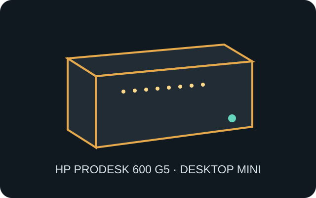

[ IDENTIFIED SYSTEM // HP DESKTOP MINI ]
HP ProDesk 600 G5 Desktop Mini
177 × 175 × 34.2 mm (W × D × H), compact proprietary business system; enclosure and component options vary by product number.

MODEL TYPE: ProDesk 600 G5 Desktop Mini (DM); not the SFF or tower case. Check product number and service guide before part substitution.
Specifications & fit
| Dimensions / type | 177 × 175 × 34.2 mm (W × D × H), Desktop Mini enclosure. |
|---|---|
| Board / power | HP proprietary system board; external HP 65 W or 90 W adapter according to processor/configuration. The chassis is not an ATX donor case. |
| Drive bays | Optional 2.5-inch SATA drive cage and M.2 storage sockets. A second M.2 storage device and 2.5-inch drive cannot be assumed to coexist; consult the exact configuration guide. |
| Expansion | No standard PCIe card slot. M.2 sockets serve storage and WLAN; rear Flex Port connector is a configurable I/O option, not an expansion-card bay. |
| Thermal / maintenance compatibility | Preserve the model-specific fan, heat sink, thermal pads and internal ducts. Keep vents unobstructed in the chassis or mounting sleeve; disconnect AC before opening and follow HP’s service sequence. |
Compatibility & preservation notes
HP’s 600 G5 Mini relies on its proprietary board, external adapter, storage cage and optional port modules. Identify part numbers before moving parts between 400/600/800 families.
- Do not assume every M.2 and SATA storage combination can be installed simultaneously; preserve the original cage, SATA harness and cable routing.
- Clean the fan and vents without damaging small antenna connectors; confirm the correct adapter wattage for the installed system board.
Manufacturer specifications & service sources
- HP Support — ProDesk 600 G5 Desktop Mini manualsManufacturer support and service-document collection for this system.
- HP — ProDesk 600 G5 Desktop Mini Maintenance and Service GuideManufacturer service procedures, parts and configuration-specific repair details.